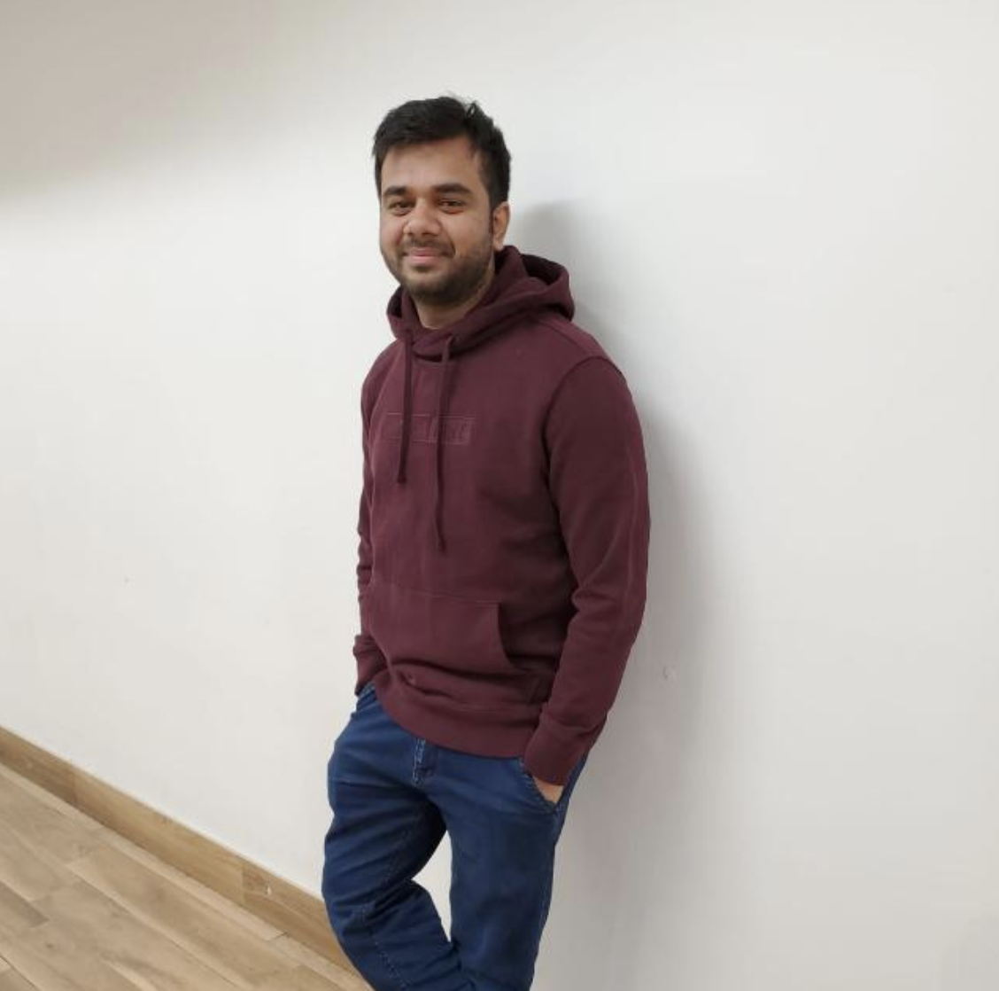

My name is Parth Dalwadi, and I am glad to welcome you to my
website. :)
I’m a post graduate student right now, and a food and travel blogger.
My passion for food and travel led me to start my own website in 2019,
and there has been no looking back
ever since. My blog is true extensions of
myself; letting me share my passion for food , places and possibilities
with like-minded souls.
My goal here is to instil a spark of inspiration into
your day to day life. I am there for the people who are foodies and travel
enthusiastic.
Find me on Instagram and LinkedIn where I’m always up and
moving, posting sneak-peeks from my day-to-day life.
| Organization | My Role | Duration |
|---|---|---|
| Larsen and Toubro Technology Services | Sr. Software Engineer | 2014 - 2018 |
| Nirma University | B.Tech Student | 2009 - 2013 |